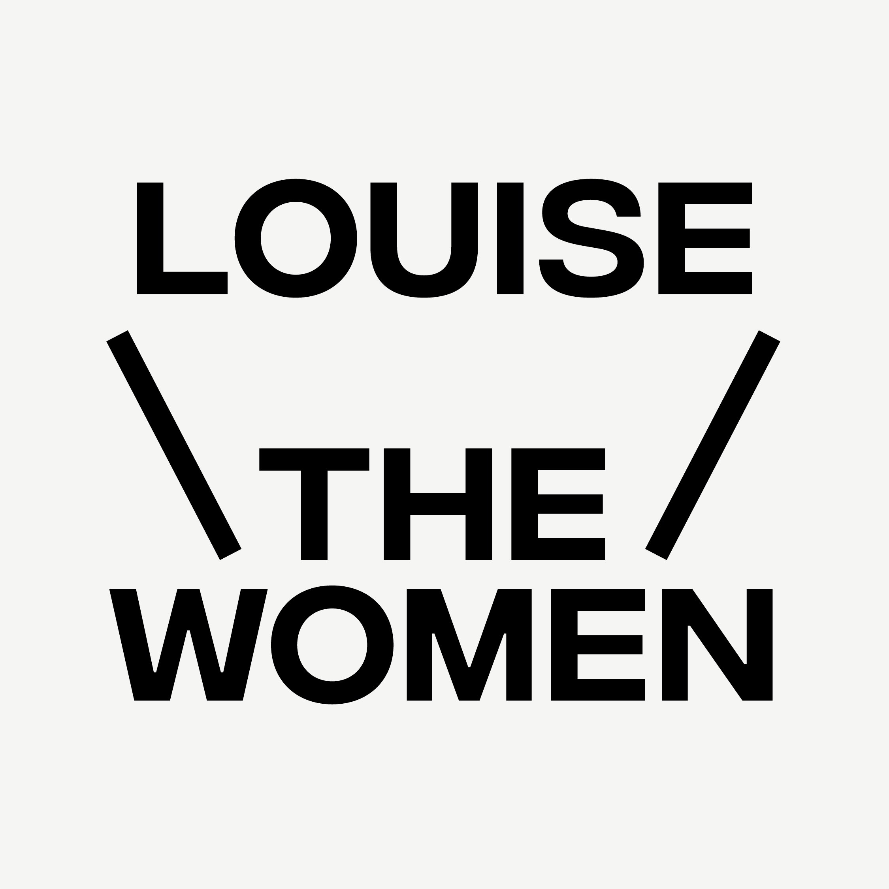

루이즈더우먼(Lousie the Women)은 회원제로 운영되는 여성 시각 예술인 네트워크 그룹이다
시각 예술분야 여성 예술인 네트워크로,세이프존 내의 협엽과 교류를 지향한다. 2020년 8월 발족되었다.
2020년 10월 1기가 모집되었고, 현재 2기 활동 중이다.
다양한 여성 커뮤니티와의 밋업을 하고 있고, 라운드크릿, 다양한 워크샵과 여성예술가를 위한 성평등 교육, 피펫 포 루이즈 등 활발한 활동을 지속하고 있다.
| 일시 | 제목 | 내용 | 비고 |
|---|---|---|---|
| 2020/8/3 | #안전한미술계를요구합니다 | 해시태그운동 | |
| 2020/9/4 - 9/8 | 이정, 정이지 2인전 참여작가 : 이정, 정이지 기획 & 서문 : 오연진 포스터 디자인 : 성정은 주최 : 루이즈더우먼 후원 : 괭카의 주머니 장소 : 킵인터치 (서울시 종로구 북촌로 1길 13) | ||
| 2020/9/4 - 9/8 | LOUISE THE WOMEN ARTIST'S SHOP | 전시와 함께하는 팝업스토어 참여작가 : 김세연, 란탄, 무일, 방새미, 수연, 오연진, 오은, 이빈소연, 이정, 이지영, 정이지, 키지, 파라나, 하다현, 하호하호, 허현정 장소 : 킵인터치 (서울시 종로구 북촌로 1길 13) | |
| 2020/9/5 | 강사 : 신희주1 총괄 : 오연진 기획 : 이정, 이도현, 유지영 홍보 : 허현정 회계 및 운영 : 정이지 온라인 진행 : 하다현, 허현정 도움 : 허요 로고디자인 : 성정은 후원 : 괭카의 주머니 주최 : 루이즈더우먼, 지원 : 한국예술인복지재단 | 온라인 진행 | |
| 2020/9/26 | 운영 및 기획 : 임유정 & 루이즈더우먼 장소 : 을지로 - 임유정 작가 작업실 | ||
| 2020/9/26 | LTW 여성 커뮤니티 밋업 | SOFA2 (여성 건축인 커뮤니티)와 밋업 | |
| 2020/10/1 - 10/10 | LTW 멤버십 1기 오픈콜 | 지원 양식 : 자유형식의 포트폴리오 구글 신청폼을 통한 서면 인터뷰 | |
| 2020/11/2 | 재료학 워크숍 : 수제 젯소 만들기 | 진행 : 이은경 작가 주최 : 루이즈더우먼 | |
| 2020/11/8 | LTW 여성 커뮤니티 밋업 | FFF3 (여성 영상인 네트워크)와 밋업 | |
| 2020-2021 | PIPETTE FOR LOUISE | 연구자로서의 여성 예술가를 조명하는 영상 프로젝트 제작 : 신희주 주관 : 루이즈더우먼 그래픽디자인 : 성정은 참여작가 : 정이지, 임유정, 김의선, 전영주, 오연진, 이도현, 이지혜, 허요, 문주혜, 김성혜, 안진선, 유지영, 이정 루이즈더우먼 유튜브 업로드 | 진행중 |
| 2020/11/22 | 운영 및 기획 : 이도현 & 루이즈더우먼 | ||
| 2020/11/26 | 여성 예술가를 위한 성평등 교육 | 강사 : 정민재 주최 : 루이즈더우먼 지원 : 한국예술인복지재단 | |
| 2020/12/9 | 예술은 여성에 대한 폭력을 정당화할 수 없습니다. | 국립현대미술관의 정윤석작가(aka 섹스돌작가)의 올해의 작가 후보 선정에 대한 성명문 | 관련기사 |